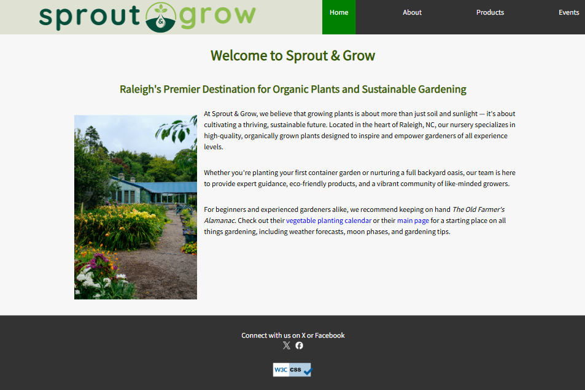
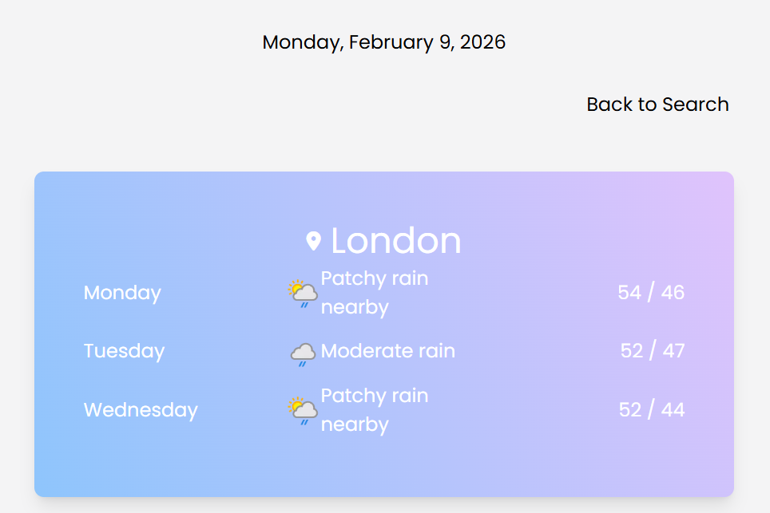

SAMPLES OF WORK

Macon County Website Redesign
A higher-fidelity template for a website redesign, focusing on responsiveness, accessibility, simplified navigation, and a modernized layout for a goverment site.
Technologies used: HTML, CSS, Bootstrap
Go to website
Mean Bean Cafe Website
Demonstrates basic skills with HTML and CSS, including iframes.
Go to website
Onwego - Mobile App Figma Prototype
A prototype in Figma for a mobile application. Demonstrates understanding of UI & UX as well as accessibility needs.
Technologies used: Figma Wireframes and Prototypes
Go to website
Sprout & Grow Website
A responsive web app demonstrating basic HTML and CSS for a fictional client, Sprout & Grow.
Go to website
Vite Weather App
A responsive web app fetching real weather data from Weather API. Locations can be searched and saved. A saved location can show current weather conditions or a 3-day forecast.
Technologies used: Vue, Vite, TailWindCSS, Weather API
Go to website